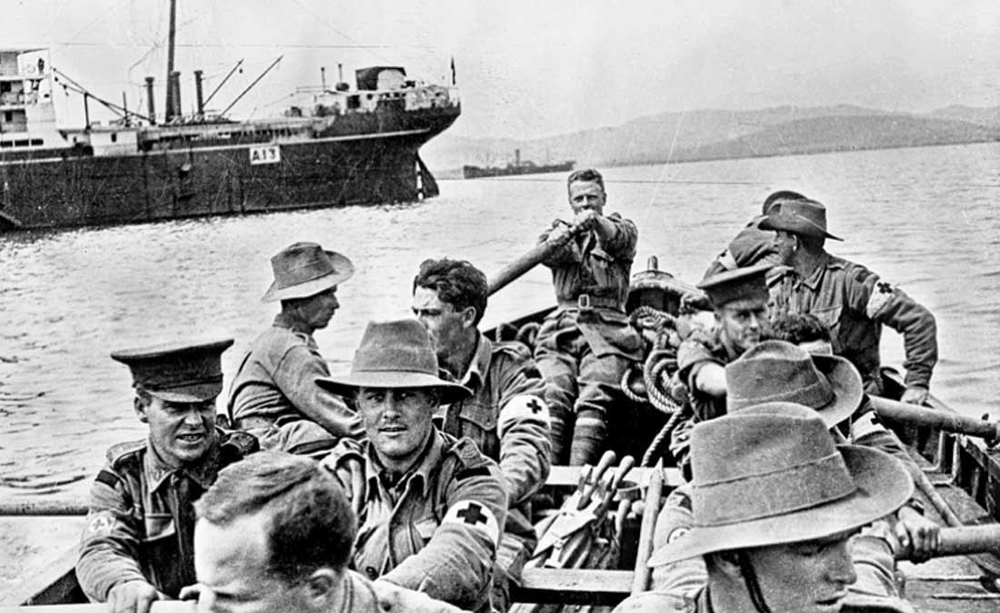

The Ottoman Empire’s entry into the war, made the Entente plan to take them out early. An after a failed operation to take the Suez Canal from Britain, the Entente seemed to have the upper hand in a war with the Ottomans. The plan was to use a joint operation of naval and land forces to take on the Dardanelles, the only defense protecting the Ottoman Capital. On March 18, 1915, the Entente Fleet would launch their naval assault. Both sides would bombard each other, and the minesweepers of the Entente were forced to retreat causing other ships to be damaged by mines. A problem with this fleet was that it was mostly older battleships that were unfit to fight the German Fleet. These older ships were planned to be lost during this campaign, but were forced to stop and the campaign turned to land.
On April 25, 1915, the Entente would launch their land campaign. The land forces were composed of British, French and ANZAC forces. ANZAC soldiers came from Australia and New Zealand. Back and forth battles on the in Gallipoli but due to the defeat of Serbia, and lack of progress in this campaign, made the Entente leave their attempt at the Dardanelles. The campaign was a disaster for the Entente, and the biggest victory the Ottomans would have during the war. The campaign did have a positive effect for ANZAC members, as it was a sign of patriotism. The landing day has become a national holiday serving a similar purpose to Memorial Day for Australia and New Zealand.